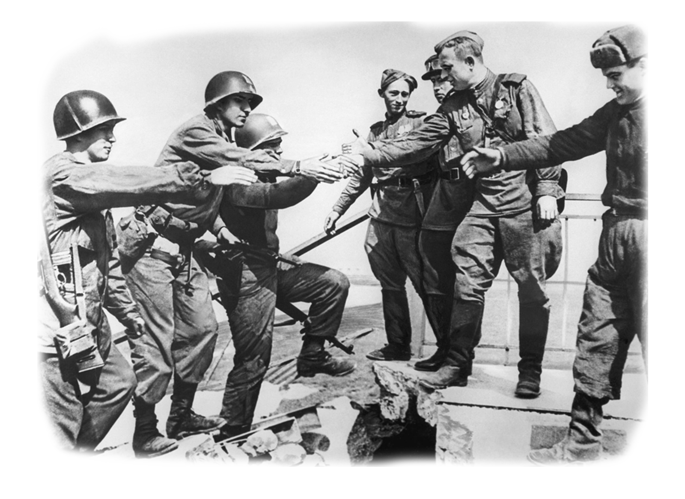
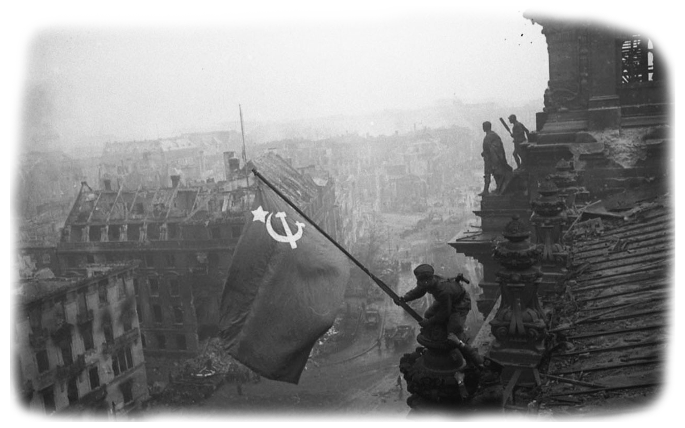

Разделы




/
Описание проекта
Этот проект был создан для того,чтобы сохранить память о тех,кто из учащихся,учителей,преподавателей,детей войны,кто хоть как-то были
Новости проекта
- Обновление сайта от 15.06.2020
- Добавленна настраница ошибки eror404.
- Обновление сайта от 05.04.2020
- Добавленны фотографии в раздел фотокарточки.
- Обновление сайта от 02.04.2020
- Доработанна основная страница.
- Обновление сайта от 26.03.2020
- Добавлены иконки в профили.
- Обновление сайта от 20.03.2020
- Добавлена оптимизация под разные мониторы.
- Обновление сайта от 13.03.2020
- Добавлено 15 архивных данных.
- Обновление сайта от 10.03.2020
- Добавлено 10 архивных данных.